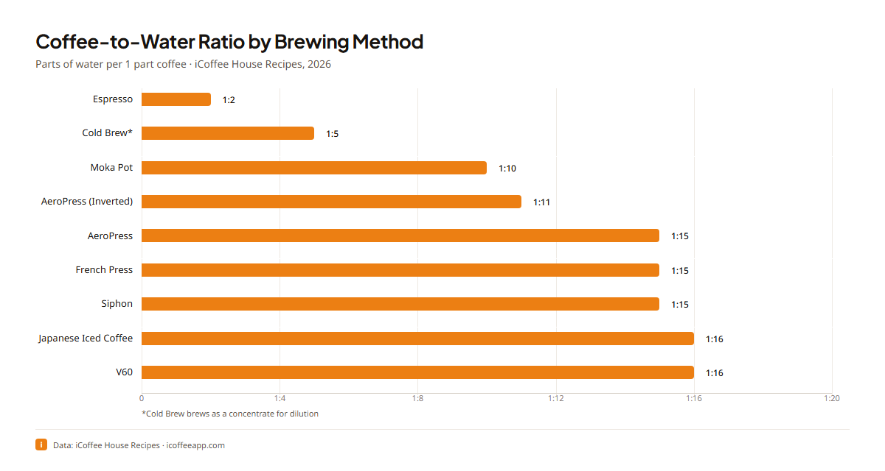
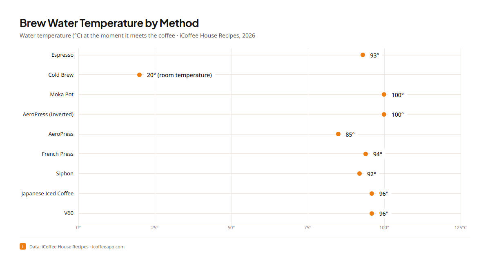

Coffee Brewing Data
Brewing parameters and data graphics from the published iCoffee house recipes: coffee-to-water ratio, water temperature, dose, and brew water for every brewing method we publish, as machine-readable data files and charts in five languages.
The methods covered: Espresso, Cold Brew, Moka Pot, AeroPress (Inverted), AeroPress, French Press, Siphon, Japanese Iced Coffee, and V60.
The full write-up with context and sources lives on the iCoffee coffee statistics page: icoffeeapp.com/en/learn/coffee-statistics.
Brewing parameters at a glance
Data exported 23 Jul 2026 · 9 recipes
The full dataset, from the current published recipes:
| Method | Ratio | Water temp (°C) | Coffee dose (g) | Brew water (ml) |
|---|
Charts
Rendered from this dataset by the iCoffee data-graphics pipeline. Each chart
exists in all five languages (-en, -es, -pt-BR, -zh-CN, -zh-TW).
Coffee-to-water ratio by brewing method

Localized versions of the ratio chart: es · pt-BR · zh-CN · zh-TW.
{kind=link}
{kind=link}
{kind=link}
{kind=link}
Brew water temperature by brewing method

Localized versions of the temperature chart: es · pt-BR · zh-CN · zh-TW.
{kind=link}
{kind=link}
{kind=link}
{kind=link}
Data files
-
data/brewing-parameters.csv:
one row per house recipe:
canonical_id,method_en,ratio,water_parts,water_temp_c,coffee_dose_g,brew_water_ml -
data/brewing-parameters.json:
same dataset with export metadata (
generated_at,source_hash,recipe_count) - data/method-labels.csv / data/method-labels.json: localized brewing-method display names (English, Spanish, Brazilian Portuguese, Simplified and Traditional Chinese)
How to cite
If you use this dataset or its charts, please cite it and link icoffeeapp.com.
Coffee Brewing Data: brewing parameters from the iCoffee house recipes
iCoffee, 2026
https://neeeeeeessa.github.io/coffee-brewing-data/
Plain-text citation:
Embed a chart
You are welcome to embed the charts and cite the data, including in commercial editorial work (articles, reviews, videos), with credit to iCoffee and a link where the medium allows it. Ready-made embed with attribution:
Markdown

Source: [iCoffee coffee statistics](https://icoffeeapp.com/en/learn/coffee-statistics)HTML
<figure>
<img src="https://icoffeeapp.com/images/data/brew-ratio-by-method-en.png"
alt="Coffee-to-water ratio by brewing method" width="1200" height="640">
<figcaption>Source:
<a href="https://icoffeeapp.com/en/learn/coffee-statistics">iCoffee coffee statistics</a>
</figcaption>
</figure>License
See LICENSE.md for the exact terms.